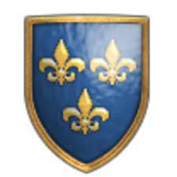
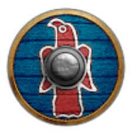
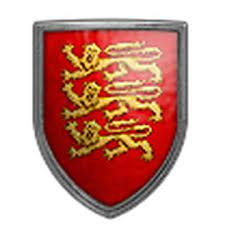
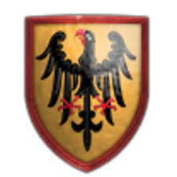

Marcin minor
Painter, Illustrator, Educator and Therapist SI, Owner's MANUFAKTURA PARABUCH http://www.facebook.com/marcinminorart Warsaw, Poland
| Vistas del proyecto | 81826 |
| Valoraciones | 5188 |
| Seguidores | 4865 |
| Siguiendo | 824 |
ABOUT ME
According to profession and , at the same time, passion, I'm a painter, illustrator, educator, art therapist and SI therapist. Diploma in painting (Hons) got under the direction of Prof. Anthony Fałat at the Europea n Academy of Fine Arts in Warsaw. In addition to easel painting, I create illustrations for children's books, caricatures and cartoons. I paint also on the tiles of ceramic and porcelain, sculpt in clay and doing a large sculpture made of clay and straw and sacks of sand. I create most popular techniques: acrylic, watercolor, ink, and dry pastels. Together with my wife I founded the Laboratory MAMAMI( www.mamami.pl). We conduct, with great pleasure, individual therapy, group classes and workshops with children, youth and adults. I have got many individual and collective exhibitions. Personally I am happily married to Eve and I am dad of four children Maja, Kalina, Frank and Antoinette.
Contact
manufakturaparabuch@gmail.com +48 605 300 107
LIMITED EDITIONS FINE ART PRINTS / GICLÉ
www.lumarte.eu/en/marcin-minor-a234

 Photoshop
PhotoshopMiembro desde 17 de octubre de 2014
DenunciarFrancos
Godos
Españoles
Ingleses
Mayas
Teutones